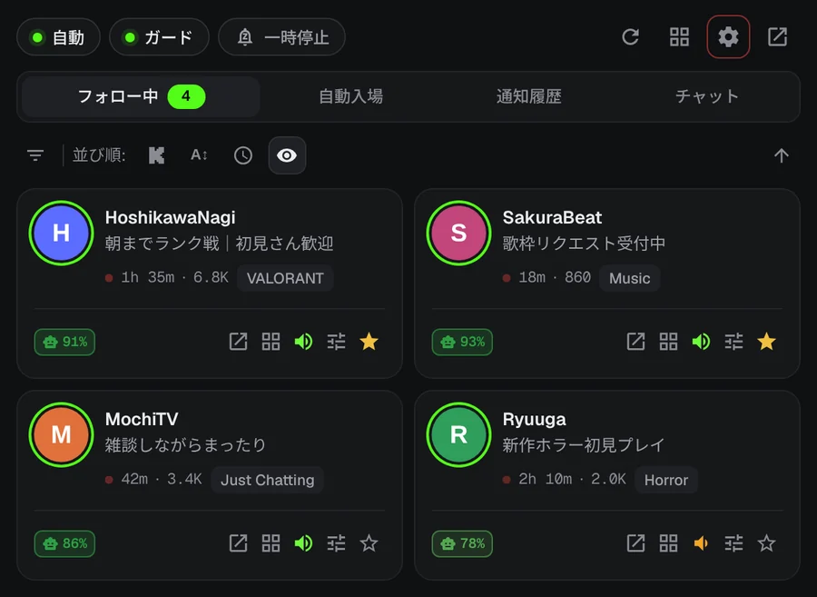
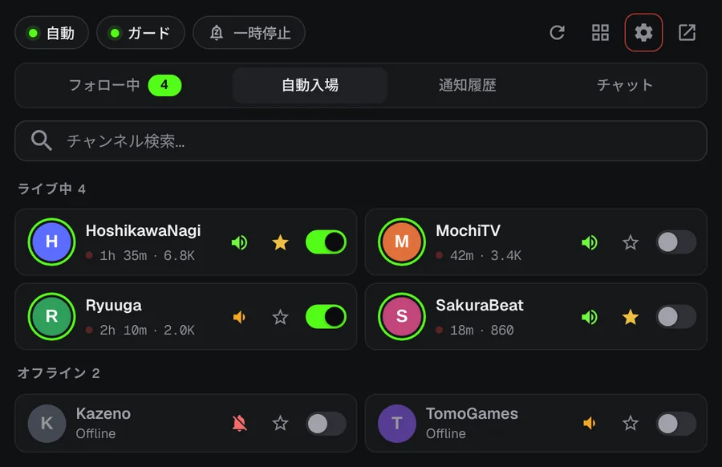
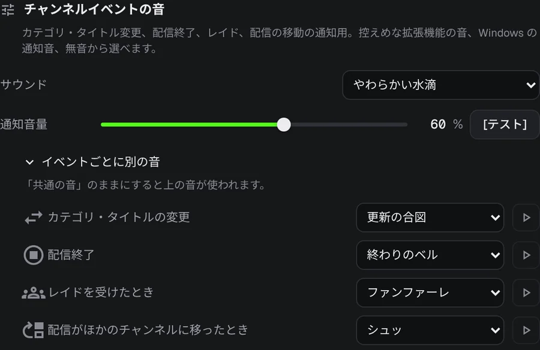
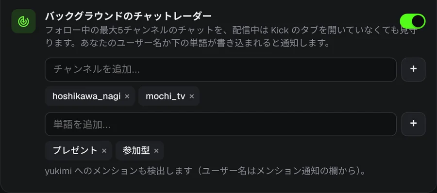
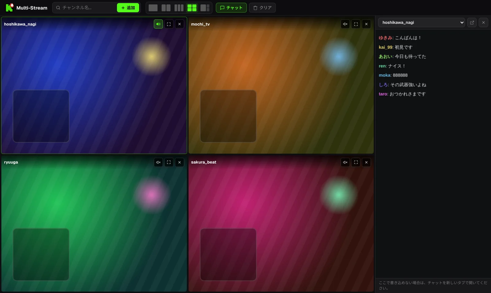

推しの配信開始を、もう見逃さない。
お気に入りの配信者が午前3時に配信開始。KickAlertは、Kickのタブを開いていなくても、その瞬間にデスクトップ通知でお知らせします。チャンネル数の上限なし、トラッキングなし、すべて無料です。
Edge・Opera版も準備中
 KickAlert
KickAlert配信開始の即時通知
Kickのリアルタイム接続を使うため、数分遅れではなく配信が始まった瞬間に通知が届きます。チャンネルごとの通知音、おやすみ時間、翌朝までの一時停止も設定できます。

自動入場
選んだチャンネルが配信を始めると、新しいタブで自動的に開きます。同じ配信が二重に開くことはなく、レイドで配信が移動したらタブを自動で閉じることもできます。

何が起きたか、音で分かる
レイド、配信終了、カテゴリ変更、配信の移動を、チャンネルごとに通知できます。イベントごとに専用の音を選べます。

チャットレーダー
最大5チャンネルのチャットで自分の名前や指定した言葉が書き込まれたら、Kickを閉じていても通知します。チャットフィルターはスパムや荒らしを隠し、似た文字でごまかしたNGワードも検出します。

最大4画面を、ひとつのタブで
配信はミュートで始まり、聞きたい配信だけをワンクリックで音声オンにできます。チャットは横のパネルに表示されます。

※配信画面はイメージです
データはお使いのブラウザの中だけに
- アクセス解析やトラッキングは一切なし
- 通信先はkick.comのみ
- すべての権限を初回起動時に説明
- GitHubでオープンソース公開
よくある質問
無料ですか？
はい。すべての機能を無料で使えます。フォローできるチャンネル数にも上限はありません。
Kickを開いたままにする必要がありますか？
いいえ。KickAlertはバックグラウンドで動作し、Kickのタブを開いていなくても通知します。同じブラウザでKickにログインしていれば大丈夫です。
インストールしたのに通知が来ません。
通知が殺到しないよう、インストール直後は通知がオフになっています。通知を受け取りたいチャンネルのベルをオンにするか、設定ですべてのチャンネルをまとめてオンにしてください。各チャンネルの設定にある「このチャンネルの通知は届きますか？」で、ほかの原因も確認できます。
どのブラウザで使えますか？
現在はChromeとFirefoxに対応しています。Edge版とOpera版も準備中です。BraveやVivaldiなどChromiumベースのブラウザは、Chromeウェブストアからインストールできます。
KickAlertをインストール
Edge・Opera版も準備中